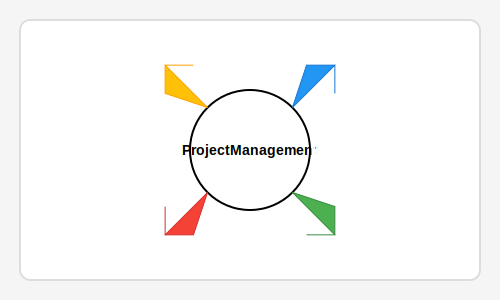

Week 2: Project Management
During Week 2, we focused on setting up project management tools and version control systems that will support us throughout the Fab Academy journey. Proper project management is essential for tracking progress, organizing files, and collaborating with others.
Key Learning Outcomes
- Understanding the importance of version control in digital fabrication projects
- Setting up and using Git for file versioning and collaboration
- Creating a project management workflow for Fab Academy assignments
- Organizing documentation and file structures effectively
- Learning to use project management tools to track progress
Assignment Deliverables
For this assignment, I had to:
- Set up a Git repository for my Fab Academy work
- Create a project management plan for the final project
- Document the workflow process for future assignments
- Establish a file organization system for CAD files, code, and documentation
Tools Used
I implemented various tools to help manage my Fab Academy project work:
- Git for version control
- GitHub for repository hosting and collaboration
- Trello for task management and assignment tracking
- Draw.io for creating workflow diagrams
Reflection
Establishing good project management practices early in the Fab Academy process has helped me stay organized and focused. The version control system ensures I don't lose work and can experiment with different approaches while maintaining a stable baseline.
As the course progresses, I expect these systems to evolve and become more refined, but the foundation established in this week will support all future work.